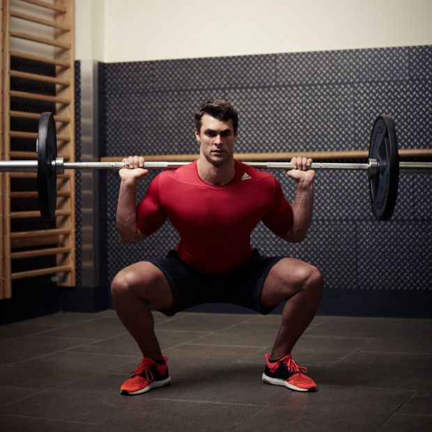

In strength training and fitness, the squat is a compound, full body exercise that trains primarily the muscles of the thighs, hips and buttocks, quadriceps femoris muscle (vastus lateralis, vastus medialis, vastus intermedius and rectus femoris), hamstrings, as well as strengthening the bones, ligaments and insertion of the tendons throughout the lower body. Squats are considered a vital exercise for increasing the strength and size of the legs as well as developing core strength. Isometrically, the lower back, the upper back, the abdominals, the trunk muscles, the costal muscles, and the shoulders and arms are all essential to the exercise and thus are trained when squatting with the proper form.[1]
